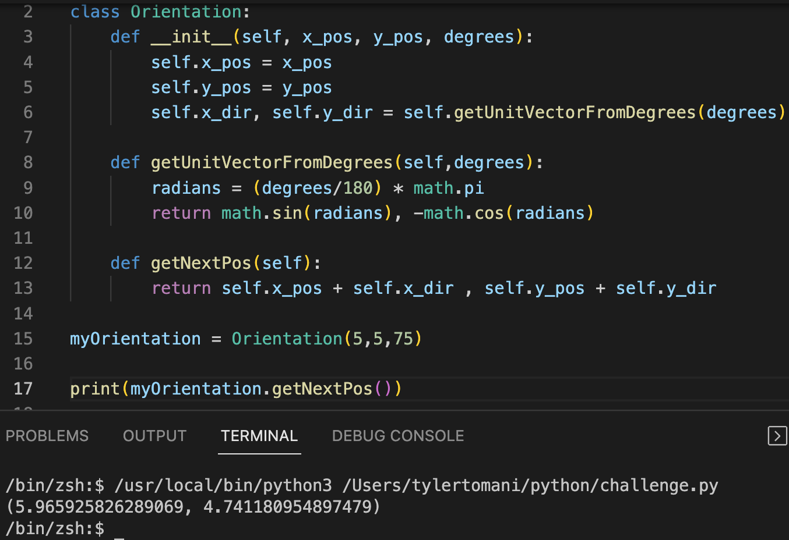

This code can be applied towards the challenges.
import math
class TerminalScribe:
def __init__(self, canvas):
self.canvas = canvas
self.trail = '.'
self.mark = '*'
self.framerate = 0.05
self.pos = [0,0]
self.direction = [0,1]
def setPosition(self, pos):
self.pos = pos
def setDegrees(self, degrees):
radians = (degrees/180) * math.pi
self.direction = [math.sin(radians), -math.cos(radians)]
def up(self):
self.direction = [0,-1]
self.forward(1)
def down(self):
self.direction = [0,1]
self.forward(1)
def right(self):
self.direction = [1,0]
self.forward(1)
def left(self):
self.direction = [-1,0]
self.forward(1)
Add an orientation class to help guide position and direction
import math class Orientation: def __inti__(self, x_pos, y_pos, degrees): self.x_pos = x_pos self.y_pos = y_pos self.x_dir,self.y_dir = self.getUnitVectorFromDegrees(degrees) def getUnitVectorFromDegrees(self,degrees): radians = (degrees/180) * math.pi return math.sin(radians), -math.cos(radians) def getNextPos(self): return self.x_pos + self.x_dir , self.y_pos + self.y_dir myOrientation = Orientation(5,5,75)
This actually works, maybe there is hope for me after all, and I don't need to sell my kidney and other organs
This is the tricky bit, Notice how getUnitVectorFromDegrees does not use self within itself. if we try to remove self, it will not work. This is similar to the Dog class from the previous lesson.
self.x_dir, self.y_dir = self.getUnitVectorFromDegrees
def getUnitVectorFromDegrees(self,degrees)
The first alternative to not use self is to call getUnitVectorFromDegrees on the Orientation class
self.x_dir, self.y_dir = Oreinetation.getUnitVectorFromDegrees class="o">getUnitVectorFromDegrees def getUnitVectorFromDegrees(degrees)
import math
class Orientation:
pi = 3.14
def __init__(self, x_pos, y_pos, degrees):
self.x_pos = x_pos
self.y_pos = y_pos
self.x_dir, self.y_dir = Orientation.getUnitVectorFromDegrees(degrees)
def getUnitVectorFromDegrees(degrees):
radians = (180/degrees) * Orientation.pi
return math.sin(radians), -math.cos(radians)
def getNextPos(self):
return self.x_pos + self.x_dir, self.y_pos + self.y_dir
myOrientation = Orientation(5,5,75)
print(myOrientation.getNextPos())
Another way to have this work without using self is with @staticmethod
fuck this it doesn't work so never do this ever fuck this
import math
class Orientation:
pi = 3.14
def __init__(self, x_pos, y_pos, degrees):
self.x_pos = x_pos
self.y_pos = y_pos
self.x_dir , self.y_dir = self.getUnitVectorFromDegrees(degrees)
@staticmethod
def getUnitVectorFromDegrees(degrees):
radians = (180/degrees) * Orientation.pi
return math.sin(radians) , -math.cos(radians)
def getNextPos(self):
return self.x_pos + self.x_dir, self.y_pos + self.y_dir
myOrientation = Orientation(5,5,75)
print(myOrientation.getNextPos)